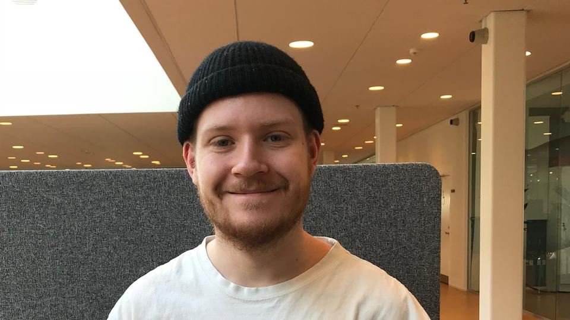

Persona

- Christian Sørensen
- Alder 24
- Under uddannelse som pædagog
- Single
- Indtægt: Lav
- København
Mål
- At få gode karakterer på sin uddannelse.
- Ses mere med sine venner og familie.
- Finde en sød kæreste.
- Få bedre struktur i hverdagen.
Har brug for:
- Computer til studie.
- Stort udvalg af tøj til hverdag og weekend.
- Varieret kost i hverdagen.
- Et job ved siden af studiet til at supplere din SU.
- Skal bo et sted tæt på familie og venner.
Personlighed
Christian er udadvendt som person og har mange venner og bekendte. Hans hverdag kan godt være en smule kaotisk, da der er mange ting at se til, men det er ikke noget der ødelægger hans humør, da han oftest er smilende og glad. På trods af hans udadvendte indstilling og attitude bor han alene, men er kun hjemme når han skal sove og lave lektier.
Teknisk baggrund og arbejdsplads
Christian bruger sin MacBook pro til studiet og til underholdning. Han er flittig bruger af sin iPhone, da han bruger den til at holde kontakt med sit netværk. Han har en iPad, men bruger den sjældent. Alt i alt er han ligesom mange andre unge mennesker, og har fint styr på telefon og computer. Han arbejder ved siden af studiet i et fritidshjem, hvor han er medhjælper. Han populær blandt børnene og hans kollegaer, og han er rigtig glad for sit fritidsjob.